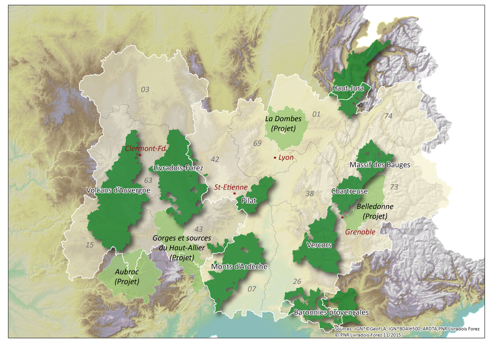

La région Auvergne-Rhône-Alpes est riche en parcs d’attraction. Vulcania, Walibi et Le Pal, qui sont parmis les trois plus gros parcs de France, sont situés dans
cette région. On peut aussi noter la présence de nombreux parcs naturels. Ces parcs sont mis en place pour mettre en valeur et protéger des grandes aires rurales
habités. L’Auvergne-Rhône-Alpes est l’une des régions les plus fournies en parcs naturels, on en dénombre neuf.
Le PAL
Le Pal est le plus grand parc d’attraction de la région. Il s’agit du 6ème parc le plus visité de France. Avec ses 50 hectares de nature, 26 attractions et 700
animaux, cet astucieux mélange entre attraction et zoo saura ravir les plus petits comme les plus grands pour un prix d’entrée de seulement 28 € par personnes.
Vous serez en mesure de voir des animaux venues de tous les continents : des éléphants, des phoques, des girafes,... Ou alors vous pourrez vous risquez au Yukon Quad,
au Twist, ou à la Rivière Canadienne, les trois attractions les plus sensationnelles du parc
Vulcania
Vulcania, situé au milieu des volcans d’auvergne, est un parc d’attraction particulier. En effet, à travers son nombre important d’attractions, le parc nous
apprend l’histoire des volcans d’auvergne et instruit sur les processus de création et de fonctionnement d’un volcan. Ainsi, que vous soyez curieux, ou simplement
en recherche de sensations fortes, vous y trouverez votre compte. De plus, le parc, de part sa localisation, offre un panorama spectaculaire sur les paysages
environnant, et tout cela pour 25 € par personne.
Walibi
Attention, adeptes des sensations fortes, le parc dans lequel vous devez absolument vous rendre est Walibi. Coccinelle, EqWalizer, Timber, WoodStock Express,
le parc est rempli d’attractions toutes plus impressionnantes les unes que les autres. Il compte aussi un parc aquatique bien fourni en activités. Bref, un régal
pour la famille, pour 30 € par personnes.

En plus de tous ces parcs d’attraction, la région compte neuf parcs naturels (trois autres sont en projet), dont les paysages ne manquerons pas de vous charmer.
Ces étendus de nature à perte de vue sont idéales pour les promenades en famille. Vous pourrez ainsi vous émerveiller devant les différents massifs et les panoramas
époustouflants qu’ils offrent, les magnifiques étendues de lacs et de fleuves ou encore devant les abondantes forêts et plaines et la faune et flore qu’elles
contiennent.